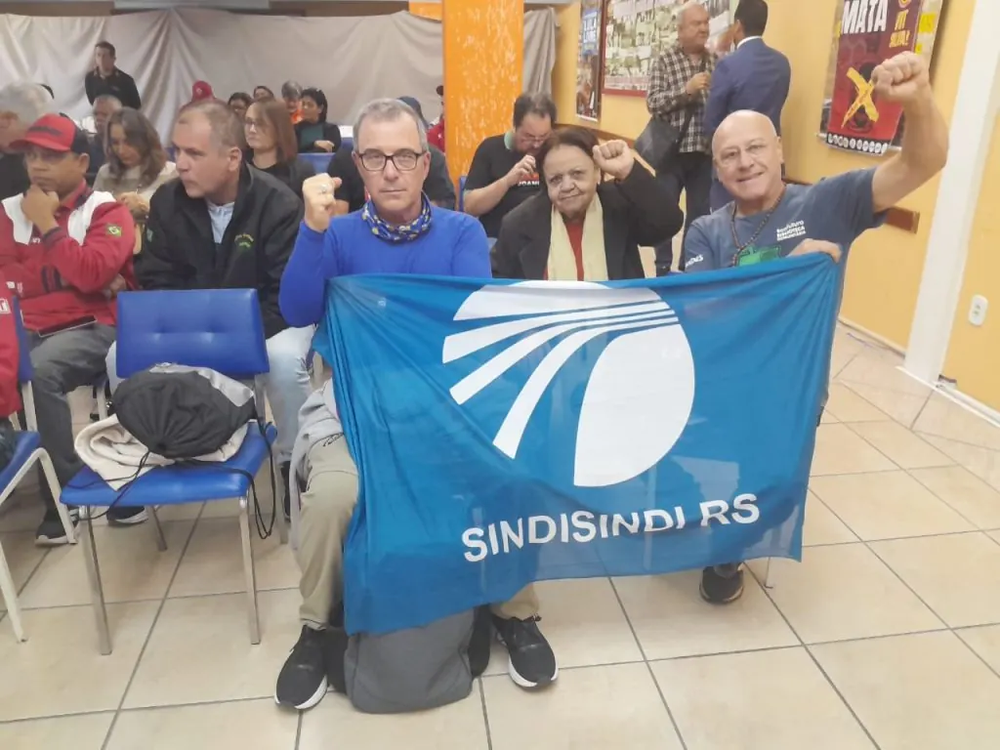

Em um movimento de reafirmação do compromisso com a categoria e com a saúde ocupacional, o Sindisindi-RS participou ativamente das atividades dos 20 anos do Fórum Sindical de Saúde do Trabalhador (FSST). O evento, realizado neste dia 28 de abril — Dia Mundial em Memória às Vítimas de Acidentes e Doenças do Trabalho —, reuniu lideranças para debater temas críticos como a precarização e os riscos psicossociais no ambiente laboral, na sede do Sindipolo.
Representando a entidade, participaram o presidente do Sindisindi-RS, Baptista Rocha, e o diretor Júlio Angeli, reforçando a união da diretoria em torno das pautas de proteção ao trabalhador.
Um dos momentos marcantes da participação do sindicato foi o depoimento da diretora do Sindisindi, Rachel Cefrin. Em sua fala, Rachel destacou o papel vital dos funcionários e colaboradores dos sindicatos, que formam a espinha dorsal necessária para manter a estrutura de luta ativa.
“Vamos pensar nos nosso trabalhadores, são eles que tocam o sindicato no dia-a-dia”, afirmou a diretora.
Além de valorizar o corpo técnico, Rachel Cefrin trouxe um tema urgente e necessário para o debate interno das organizações: o combate ao assédio. Ela enfatizou que a coerência sindical exige uma postura ética intransigente, destacando a importância de combater qualquer forma de assédio que venha a ser exercido por diretores e gestores.
